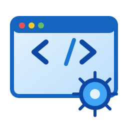

Three Main Modules
The system is organised into three main modules: Admin, Submit, and Search. These can be accessed through the navigation menu.

Group Project Portal
Use the navigation above to access the available system modules.
This project was developed for the CEI326 Web Engineering course and is organised into separate functional modules.
The system is organised into three main modules: Admin, Submit, and Search. These can be accessed through the navigation menu.